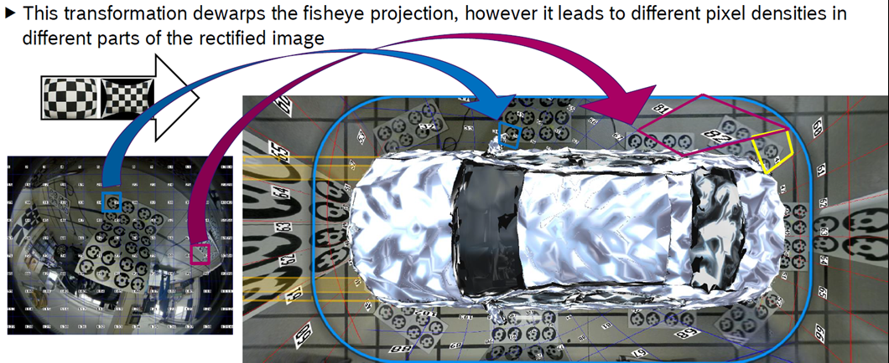
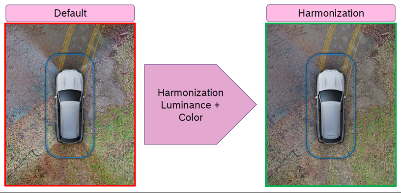

IMC::IMP
About
This page aims to collect the existing product's IMP(IMage Preparation) functions list, to determine what should be implemented into W3.
Features
From NRCS2
Blindness detection
Check if the camera is blocked by dirt or something else
A lot of False Positive with current CV in Bosch products
Increased the precision by a tiny CNN
Temporal Noise Filter
Reduce pixel noise in the time domain, in low light conditions, or aliasing noise in daylights
Sharpness harmonization for fish-eye cameras
Fish-eye camera is with relatively high pixel-density in center, but low pixel-density away from center

Image harmonization
Y channel for luminance
UV channel for color

Tone map for contrast optimization
contrast-optimized image and thus counteracts the reduced dynamic range due to the harmonization

From MPC3
IG: Image Generation
Meta data:
Image mode (LFM/HDR)
Exposure parameters (analog gains, dual conversion gains, subexposure times (in px and sec), lfm integration times, etc.)
244 bin histograms for ROI1-3 together with means/stddev/etc.
Imager temperature in Kelvin
ImagerMon: Error state for safety relevant monitoring
ISPControl:
Dynamic white point
Noise Level
ExposureControl
SCE: Sight Conditions Estimation
CBL: percentile values representing physical scene brightness (in lux)
LumPatches: mean luminance values over defined rectangular image patches (see BMW Kafas offer)
Self-glare: indicator for being glared from the car's own high beam headlights in fog
Blindness: Contains the triple state (blind, not blind, and undecided) that represents the blindness information. Additionally also continuous values representing the blindness severity. Both for each measurement program specifically. This information is interpreted to temporary and permanent blindness.
IMR: Image rectification
The imrAdapter component is responsible for performing image rectification of the ispAdapter image outputs.
The input to the imrAdapter is the image output of ispAdapter. In general this contains of the following images:
HDR left L and UV
HDR right L
LFM left L and UV
The imrAdapter then produces several output images for the appropriate input images, e.g.:
it will provide two different rectified views: far and wide view
it will also provide subsampled and transposed image pyramids of the rectified images
The image rectification will be performed by a hardware block called IMR-Ext which provides several channels to parallely process the images. Two channels will finally be used for processing all required images.